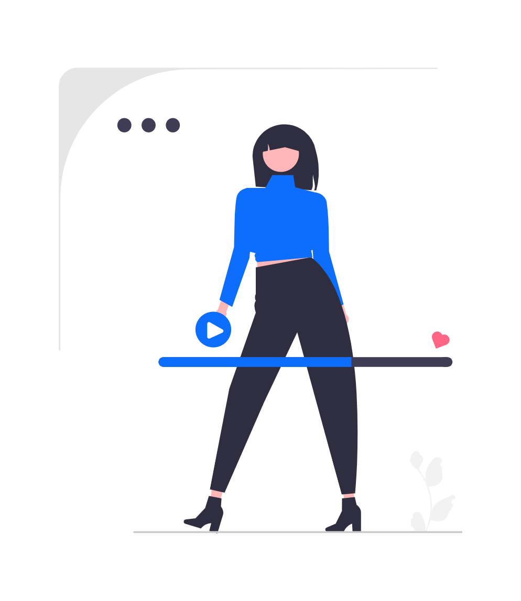

How it Works
High Quality
The bootcamp delivers high-quality , visually engaging videos , with animations , perfect for visual Learners

Detailed
Every concept is taught in comprehensive detail , ensuring students understand thoroughly , with no confusion left behind
Structrred
The course is structured to guide you through building a full-stack application , providing a clear , start-to-finish understanding
FAQ
This bootcamp is designed for beginners with no prior coding
experience and intermediate learning looking to master
full-stack development
You will master the essentials of web development ,
including HTML , CSS , and JavaScript , dive into backend
technologies like NOde.js , Express and MongoDB , and learn
tools like React and Postman to build and test full-stack
application
Unlike other programs , we focus on detailed , high-quality
content and a hands-on approach , guiding you through one
cohesive full-stack projects
No prior knowledge is required-just a willingness to learn!
We cover all concepts from the ground up to ensure you are
set for success